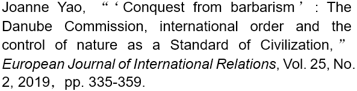

收录于合集
作品简介
【作者】 Joanne Yao，本科毕业于芝加哥大学历史与政治学专业（2006年），硕士毕业于约翰·霍普金斯大学国际关系与国际经济专业（2008年），2017年获伦敦政治经济学院国际关系专业博士学位。她曾任教于英国杜伦大学，现为伦敦大学玛丽女王学院国际关系专业讲师。她的研究兴趣为国际关系史，环境政治以及19世纪国际组织和全球秩序的发展。
【编译】 施榕（北京大学国际关系学院博士研究生）
【校对】 陈勇
【审核】 赵雷
【排版】 贺奕
【来源】

本篇文章获2019年《欧洲国际关系杂志》（EJIR）最佳论文奖。
期刊介绍
European Journal of International Relations,《欧洲国际关系杂志》（EJIR）是欧洲政治研究联盟国际关系常设小组（the Standing Group on International Relations of the European Consortium for Political Research, SGIR）的同行评审旗舰期刊, 由SGIR和欧洲国际研究协会组成的联合委员会共同管理。2019年该期刊的影响因子为2.756。
征服野蛮： 多瑙河委员会，国际秩序和将对自然的管控作为“文明标准”
‘Conquest from barbarism’: The Danube Commission, international order and the control of nature as a Standard of Civilization
Joanne Yao
内容提要
近年来，国际关系学界开始将19世纪作为当代国际秩序形成和使得国际秩序合法化的“文明标准”（Standards of Civilization）得以发展的关键时期。然而，少有研究注意到社会与自然间的关系在塑造这些“文明标准”中所扮演的角色。这篇文章认为， 在19世纪，对自然的控制和利用成为了一种“文明标准”并构成了加入文明化的欧洲国际社会的成员资格 。这一“文明标准”认为， 文明的政体必须同时保持对内的领土控制， 以及对外履行国际法赋予的义务。作者通过考察19世纪欧洲与其周边国家围绕多瑙河展开的政治斗争，意在强调在西欧各国眼中，俄国未能成功地驯化自然以满足该“文明标准”以至于丧失了它在管理多瑙河问题上的合法性权威。在此背景下，克里米亚战争后的西方各国创立了一个管理多瑙河流域的国际委员会，来弥补多瑙河地区由于缺乏文明政权的管理而导致的一系列困境。这些关于文明的假定使得1856年多瑙河委员会成为早期国际组织的雏形，它的成功也为今天的国际秩序带来一系列启示。
文章导读
一、导论
近年来，国际关系学界将目光投向19世纪并将其视为当前国际秩序发展的分水岭。 **在这其中，关于 “文明标准”的研究阐述了19世纪区分非文明国家与文明国家的合法性机制背后的观念架构，以及这一合法性机制如何确立了以西欧为中心的国际秩序。**进入20世纪后，虽然关于“文明标准”的话语已经被一种更为平等的话语—即主权和国际法—所替代，但是“文明标准”的遗产依然塑造着人们关于国家合法性的观念。尽管目前针对“文明标准”的研究日益增加，但是很少有学者注意到社会与自然间的关系在塑造这些标准中所扮演的角色。 在本文中，作者强调了对自然的管控如何在 19世纪发展成为一种文明的标准，并且成为早期国际治理的基础。把管控自然视为衡量文明进步的一个指标，这来源于启蒙运动中人们对科学力量的信仰，（人们）意图通过它驾驭自然以实现社会进步。在19世纪，人们将这种对科学的信心嵌入文明的话语构建，以支配和开发自然的能力来衡量一个政体的文明程度，从而建立起一种“文明标准”。 这一 “文明标准”主要包括两个方面：一是该政体对内的领土控制，二是该政体对外履行它对其他文明政体所负有的国际义务。 体现这一 “文明标准”最为典型的例子是英国与俄国围绕管控多瑙河三角洲展开的斗争。能否对多瑙河进行有效管控，可以用来衡量俄国的对内能力、国际道德以及它履行国际承诺的能力。俄国的管理失败使其丧失了控制多瑙河的合法性，并且促使1856年的巴黎和平会议创立多瑙河委员会——一个对多瑙河河口进行有效控制的国际机构。
此外，通过将对自然的管控作为19世纪的一个“文明标准”， 本文呼吁学界关注社会与自然之间关系的重要性，以便于理解国际社会的全球化 。在过去十年，国关学界质疑了国际社会从欧洲向外扩展的欧洲中心论，纠正了传统的、单向的关于欧洲国际秩序发展的思维。这些研究关注特定时空背景（context- specific）以及西方与其他具有复杂社会文化的国家进行的不平衡互动，以更好地理解那些影响19世纪国际秩序产生和发展的文明进步的概念是如何变化的。然而，很少有研究注意到地理因素在创造文明标准中的重要性。 通过仔细考察 19 世纪中期西欧国家对多瑙河地区的介入，作者指出，在当时西方有关文明和进步的看法上，能否有效管控自然是一个重点，也是文明进步的重要特征。 这些观念影响了西欧与俄国在领土控制上的斗争，并且被包含在关于黑海地区文明话语的演进中。作者认为， 将对自然的控制作为 “文明标准”的这一假定（assumption）促使多瑙河委员会得以建立，这一早期国际组织以及国际治理的雏形被赋予了驯化自然的责任以使得多瑙河有助于国际商业的开展。 这些在 19世纪支配国家与自然之间关系的“文明标准”被内嵌于国际组织的制度设想中，继续影响着当今国际秩序里国家与环境之间的紧张互动。
二、“文明标准”与国际秩序
针对“文明标准”的研究主要探寻的是组成国际秩序的观念架构。经典的“文明标准”起源于19世纪的法律准则， 它们被用来区分获得国际法承认的文明国家（ civilized states）与未获得承认的非文明国家，并为帝国的殖民主义提供正当性。 这些文明标准包括政府的基本制度、进行自我防卫的组织能力、制定法典和对内实行法治、以及国际法的承认。 在过去几十年里，自由主义理论家试图遮掩这一概念的殖民含义，在这种情形下，“文明标准”经历了复兴。唐纳利（Donnelly）认为，约束国家行为以使其获得国际社会成员资格的道德准则和责任代表着经典“文明标准”中不那么黑暗的一面。二战后，这些从19世纪“文明标准”中复兴的道德准则和责任作为“合法性的自由标准”（liberal standard of legitimacy）体现在了国际人权法中，昭示着国际和平与安全的新时代。批评者认为这一做法忽略了历史与现实之间重要的观念联系，并且暗示国际社会中规范传播带有启蒙运动式的目的论特征。然而，尽管存在诸多争论， “文明标准”仍然是一个考察西方规范秩序的扩展以及国家得以被该秩序接受的重要分析工具。
**英国学派对于 “文明标准”这一概念的讨论聚焦于欧洲国际社会的扩展，即新成员致力于加入文明主权国家的俱乐部。欧洲通过这一扩展统一了全球，这不仅依靠经济和技术创新，同时也有赖于建立以国内领土主权和国家间法律地位平等为特征的新秩序。**布尔和沃特森认为这是一种基于欧洲自身历史经验的欧洲中心论。在更近一段时期，英国学派的学者考察了19世纪“文明标准”在21世纪国际政治中的延续，比如围绕“失败国家”的话语。
针对英国学派最初关于“文明标准”研究的批评有很多，一些试图通过谨慎地考察19世纪非西方国家如何满足欧洲社会的标准来纠正趾高气扬的欧洲中心主义；另一些则通过关注存在于近代欧洲之外的其他国际秩序以调和西方例外主义。蒂姆·邓恩（Tim Dunne）和克里斯蒂安·罗伊-施密特（Christian Reus- Smit）等学者质疑了国际社会从欧洲向外的单一线性扩展，更倾向于使用“全球化”这个术语来描述这一不平衡的过程。 **更进一步来看，近期关于 “文明标准”的研究批评了主流的建构主义，特别是它对研究那些“好”规范的强烈偏好。**与英国学派的学者类似，作者将“文明标准”视为揭示当前国际秩序的观念架构背后的基本假定，它们通常被研究制度和规范扩展的国关学界所忽略。 作者强调对自然的管控成为构成 19 世纪国际秩序的合法性观念，被用来区分文明国家和非文明国家。通过考察 1856 年多瑙河委员会的建立，作者描绘出了对自然的管控是如何被包含在国际制度及其实践之中。
国际组织并不起源于国际联盟，准确来说19世纪见证了国际主义的发展，一些功能性组织管理着相互联系日益紧密的世界。虽然作为一个管理河流的技术性机构，多瑙河委员会的创立看起来无关紧要，但直到20世纪早期一些人开始对国际机构进行编目时， **多瑙河委员会对国际治理而言具有了更为重要的意义，这是因为它在 2个相互联系的方面树立了典范：一是它独立于领土当局（territorial authority），二是它作为功能性与非政治化的机构取得了成功。**这种功能主义路径蕴含在早期国际治理的思想中，为国际联盟和联合国的建立奠定了基础。然而，作者强调多瑙河委员会作为一个功能性的执行机构实际上具有很强的政治色彩，并且建立在将对自然的控制作为“文明标准”的基础之上。将多瑙河委员会的成功归因于它的技术专家和非政治化活动就忽略了多瑙河委员会作为国际治理的一个典范所具有的政治意味。这里所说的“政治”将焦点从国家之间的对立转移到了全人类与非理性的自然世界的冲突。
在将文化和文明置于自然的对立面时，哲学家和历史学家总是显得非常谨慎，然而除了极个别的例外，这种谨慎和担忧在国关学界基本不存在。虽然一些著作已经强调“环境管理”（environmental stewardship）已成为国际社会的一种首要制度，或者对动物的控制也是文明标准之一，但目前学界并未充分注意到19世纪自然与文明之间的紧密关系及其留下的长久遗产。 作者提出，驯化和利用物质世界的能力既是一个国家国内制度合法性的证明，也是它与其他国家之间具有合法关系的证据 。理解将管控自然作为19世纪支配欧洲社会的“文明标准”的重要性和作为早期国际组织的多瑙河委员会能启发人们洞察为何国家与自然之间的紧张关系仍然存在于当今的国际社会之中。
三、管控自然：一个具有
双重含义的“文明标准”
将管控自然作为一种文明的标准主要是通过两个主要机制来实现：一个政体对内的领土权；以及政体之间相互肩负的义务（比如国际贸易）。 首先，中世纪的领土权转变成现代意义上的领土权主要依靠的是对自然的控制。到19世纪，具有明确边界的领土国家成为欧洲政治权威的主要形式。因此，为了全面成为19世纪文明化的欧洲社会的一员，各国都试图建立集权化的国家以便能够对一片连续的土地行使排他性的控制权。作者认为，领土权不仅仅意味着对人口的控制和管辖社会行为的能力。19世纪现代领土国家的崛起也意味着国家与自然之间的等级关系，这种关系的建立依靠的是围绕启蒙运动的理性和文明化进程而产生的科学信念。詹姆斯·斯科特认为对自然的管控在现代治国方略中占据中心地位，现代官僚国家的一个主要目标就是驾驭自然以便从自然资源中获利。为了实现这个目标， 国家采取了一种高度现代主义的意识形态（ high-modernism ideology）——即通过技术和科学的进步所带来的好处为管控自然和一切人类活动提供合理性。此外还存在这样一种信念，即管控自然对国家而言将带来道德与财政上的双重好处，并开启国家的文明化进程。虽然斯科特并未明确地将现代化与“文明标准”联系起来，但是他对加强领土控制背后的道德和启蒙理性的讨论直接与19世纪国际秩序中的“文明标准”相挂钩，将文明国家与非文明国家区别开来。
欧洲的现代化和进行国家建设的努力展现了对自然的驯化如何成为合法且符合道德的领土权的标准。18世纪中期，在腓特烈大帝的监管下，一条12英里长的水渠得以建立在奥得河上，用来排干沼泽地的水并增加农业用地面积。在腓特烈大帝给伏尔泰的信中，他认为“不管是谁，只要能提高土壤质量、开垦荒地以及清理沼泽就是在征服野蛮（conquests from barbarism）。”控制河流成为一场英雄级的征服——一场人类利用自然水资源以满足社会需求的斗争。 将对自然的管控作为“文明标准”不仅限于欧洲疆域内，帝国主义的扩张使其成为了一项衡量领土合法性的全球标准。
使得管控自然作为一项“文明标准”得以运作的第二个机制是国家需要肩负起对其他文明国家的义务。典型的一个例子是1815年维也纳会议上达成的国际协议，该协议认为河岸国家有责任维持欧洲水运航线的畅通以维护国家间的商业利益。 在 19世纪，自由贸易逐渐被制度化为一项公共产品，并被认为对文明和道德的进步具有促进作用。国际商业的兴盛通过两种方式使得国家与自然地理之间的互动成为必然，一是国家必须能够利用国内资源来提升贸易商品的质量和数量；二是贸易要求基础设施和法治来确保商品及服务能在国家之间进行高效地运输。1815年维也纳会议以法律的形式确立了法国所提出在国际河流上自由航行的要求，国家拥有了正式的法律义务来维持国际河道（比如莱茵河）的通畅以促进全球贸易。作为“欧洲协调”的早期关注点，在国际河流上的航行很好地体现出了将管控自然作为一项“文明标准”是如何影响了国际秩序的发展。接下来的部分将通过考察19世纪中期多瑙河的案例，试图说明未能成功履行国际义务的国家将被视为不负责任，并无法成为欧洲国际社会的文明成员。
四、管控多瑙河三角洲和
1856年多瑙河委员会
尽管作为维也纳会议上的大国之一，19世纪的俄国在维持其大国地位时却面临着困难。在克里米亚战争之前，俄国的大国地位已然存疑。本部分认为，导致这一困境的原因除了俄国国内制度和它停滞不前的军事力量外，还有围绕管控多瑙河问题上的文明话语，后者促使人们对俄国国际地位的认知发生转变。首先，作者将考察对多瑙河的管控是如何成为合法统治的标志；其次，本部分论证了在1856年克里米亚战争的前几十年，西方国家如何将俄国对多瑙河三角洲的管控不力视为未能达到“文明标准”的表现，这一失败同时体现在国内和国际层面上。最后，作者认为，多瑙河不仅是欧洲向东部野蛮地区输出文明的管道，同时下游地区的野蛮和混乱也可能经由多瑙河入侵上游的欧洲国家。因此，多瑙河与欧洲文明之间的复杂联系也影响了各国为了管控多瑙河三角洲而展开的竞争。
4.1 历代管控多瑙河的合法性权威
在19世纪之前，多瑙河代表着一种危险而未被驯服的力量，因而亟待管控。多瑙河的危险主要体现在两个方面。 第一是来源于自然的危险 ，包括摧毁沿岸村庄的洪水以及给贸易运输带来的航行困难。 第二是形而上的危险 （metaphysical dangers），多瑙河带来的混乱可能会对理性的文明产生威胁。这两类威胁都需要人类智慧和政治决心来加以克服。 自罗马帝国以来，能够管控多瑙河的领导者通过展现出它们保护民众免于多瑙河所带来的危险的能力而获得统治的合法性。
对航行者而言，多瑙河最危险的部分可能就是铁门峡谷（the Iron Gate）,也称为喀山峡谷（Kazan gorge）。它是特兰西瓦尼亚阿尔卑斯山山脉（Transylvanian Alps）上一段长达120公里的石灰岩峭壁，将多瑙河上下游分隔开来。为了克服这个天险，罗马皇帝图拉真（Emperor Trajan）修建了一条道路，用以绕过险峻的急流并连接上下游。这是一项伟大的工程，为了纪念这一成就，图拉真修建了一块纪念碑用以庆祝他战胜了河流，这场胜利既是物质层面的也是道德层面的，反映了他驾驭自然的能力以及统治河岸地区的政治权威。17世纪后，奥地利统治者继续通过管控多瑙河来宣示自己的帝国权威。从铁门峡谷至奥地利河段的多瑙河上游，狭窄的峡谷形成了错综复杂的交错河道，威胁着航行。通过克服多瑙河上的这些自然障碍，奥地利皇帝弗朗茨·约瑟夫宣称自己是一个解放者，他的统治合法性源于他将人民从自然的危险中解脱出来。类似地，无法驯化自然就代表着缺乏政治合法性。当之前罗马帝国修建的道路被破坏后，铁门峡谷继续阻碍着航行。在19世纪中叶以前，乘客和货物只能走岸上的陆路来通过通该峡谷。从19世纪30年代开始，试图炸毁铁门峡谷的努力同时面临着水文性难题和来自奥斯曼帝国的阻力。奥斯曼帝国对管控河流的消极态度使其统治的合法性受到质疑，奥斯曼人也被认为是原始的和迷信的，以至于不愿意支持一个明显能带来商业利益和文明进步的理性工程。相同的“文明标准”同样适用于另一个管控着多瑙河河口的帝国：俄国。
4 .2 商业、文明和多瑙河三角洲
在19世纪中期，多瑙河作为一条商业路线出现在国际议程中，这其中包括技术性的原因——蒸汽船的诞生有助于克服航运困难，使得多瑙河成为一个可供使用的长距离运输路线；还有一个原因是 **在1 9世纪，自由贸易、和平与文明进步之间具有意识形态上的联系。**正如英国帕默斯顿爵士所认为的那样，诸如河流与海洋等自然地理现象的存在只能通过它们对商业的作用来加以解释。同时，商业不仅带来了财富，还有智慧、和平以及最终的文明。 通过将自然与商业的文明效应联系在一起，这种对地理的概念化 使国家之间的某种关系形式自然而然是文明和进步的。在当时，这种文明化的修辞是十分普遍的。大卫•厄克哈特（David Urquhart）和迈克尔·约瑟夫·奎因（Michael Joseph Quin）都曾表达过类似的观点，即将多瑙河上的安全航行与给东方地区带来商业、政治进步和文明联系在一起。因此，多瑙河是传输文明的天然管道。多瑙河的管理者们有义务驯化这条河流，并且保持其作为商业运输道路的开放性；否则，它就有可能被描绘成阻碍文明进步的障碍。
多瑙河的下游有着独特的水文特征：与最后冲向大海的河流不同，在现代罗马尼亚的切尔纳沃德（Cernavodă），多瑙河转向北部流去并且速度减慢。在加拉茨（Galati），河流再次向东流入三角洲。这种独特的水文特征降低了河流在转折处的速度，并在已经狭窄的河道上沉积泥沙，使航行变得尤为危险。许多航线在宽阔而沼泽遍布的三角洲上蜿蜒而行，但大型商船只能行驶在苏利纳（Sulina）航道上。根据1829年《亚得里亚堡条约》（Treaty of Adrianople），多瑙河三角洲处于俄国的管控之下，俄国有责任维护多瑙河河口地区的通畅以便于开展商业贸易。 然而，俄国失败了，未能从以下两个方面对三角洲进行有效的管控： 第一，保持三角洲 地区的河流深度以便船只可以通行；第二，确保三角洲地区的法律和秩序。英国政府甚至派出外交使节向俄国外交大臣施压，要求解决阻碍多瑙河航运的障碍。俄国外交大臣向英国保证，俄国正在努力清理航运通道，但实际上并没有取得什么进展，以至于英国怀疑俄国是否真的有付出过努力。然而，不管俄国有没有努力尝试，事实是它未能确保多瑙河三角洲地区的航运安全，履行其作为主权国家和文明社会成员的责任，因此丧失了控制该地区领土的合法性。俄国对该地区的统治也被欧洲国家认为是非法的、不文明的和危险的。维护多瑙河的航行自由是通过和平谈判结束克里米亚战争的前提之一。在1855年的维也纳会议和1856年的巴黎会议上，各国讨论建立一个新的国际机构，它不仅有能力控制自然力量，也愿意在道德和政治层面上承诺管控河流，促进文明进步。
4 .3 一条文明的双向通道
对俄国无法控制其领土和履行其国际法义务的担忧，揭示出这条未开垦河流在意识形态层面上给欧洲带来的不安，这实际上是欧洲对文明进步的深切担忧。多瑙河代表着文明的通道，它不仅运输货物，而且还从欧洲往东部地区传达理性和社会进步。因此，河流把文明带到未知的东方不仅具有象征意义，它还体现了一种形而上的特征。
围绕多瑙河三角洲地区产生的美学思想体现了19世纪西欧对这条河流的态度。虽然旅行家们对多瑙河上游的壮丽景色赞不绝口，但他们对多瑙河下游，特别是多瑙河三角洲的描写却不那么具有田园诗般的色彩， 他们经常将多瑙河下游三角洲地区在美学上的丑态归咎于两个原因： 一是奥斯曼帝国在沿岸地区的专制统治或俄国压迫； 二是该地区土地肥沃但却未经开垦，这种野蛮的状态是令人厌恶的。 上述两个原因在逻辑上是相互联系的：不文明的统治浪费了这块肥沃土地，但一个文明的政治权威将会把这片土地改造成有用的景观。 认为合法的政治权威来自对土地的合理利用和改良的论点 ，为欧洲的殖民扩张提供了正当性。
多瑙河下游地区的野蛮状态之所以危险，不仅是因为它威胁欧洲的贸易，而且还因为 存在倒流的风险 。的确，与大多数河流不同，多瑙河上的英里标志始于下游的三角洲，并向上游延伸。除了18世纪中叶沿着河流顺流而下的德国施瓦本人（Swabians），贸易、思想和征服者的军队几乎总是沿河而上。 **从这个意义上说，河流作为人类的 通道，其流向与它的自然状态相反。**如果一条从欧洲向外流的河流带来了文明，那么一条从外向内流的河流则会带来相反的威胁。因此，这种不安促使欧洲外交家们在克里米亚战争后建立一个理性和科学的机构来管控多瑙河三角洲。
五、组建多瑙河委员会
当英法两国在克里米亚战争中取得胜利后，西方国家将对自然的管控作为一项“文明标准”纳入了多瑙河委员会的建设中，这个早期的国际机构成为之后国际治理的典范。 因此，将管控自然作为“文明标准”成为了国际合作中技术官僚语言（ technocratic language）的一部分，同时也被包含在支撑国际组织发展的功能性假定中。
在1856年巴黎和平会议之前，克里米亚战争的主要胜利者法国和英国强调，多瑙河的自由航行对贸易和文明而言至关重要。俄国占有多瑙河三角洲却无法对内部领土实行有效控制，也不能履行对其他国家的条约义务，因此它与其他文明国家的关系是失败的，应当放弃对该地区的领土权利。那么谁来代替俄国呢？
**一个解决方案是允许领土当局（ territorial authority）控制该地区。**到1856，克里米亚战争所导致的领土调整意味着俄国不再是一个河岸国家，三个新的君主国出现在多瑙河沿岸——摩尔达维亚（Moldavia）、瓦拉几亚（Wallachia）和塞尔维亚（Serbia）——它们都建立在奥斯曼帝国的宗主权管辖之下。然而，欧洲列强并不相信这些在奥斯曼帝国治下的新国家能够完成这个任务。实际上，在这些新国家满足“文明标准”之前，它们不会被视为国际社会中有能力的行为体。
奥地利提出了一个替代性的方案，即让英国的战舰驻扎在多瑙河河口来防卫俄国和确保航行自由。 但是英国的罗塞尔勋爵认为战舰不是一种合适的解决方法，因为人们所抱怨的并不是通过战舰能阻止的暴力行为，而是行政当局的故意不作为。罗塞尔勋爵认为多瑙河能在工程师和官僚的帮助下转变成和平有序之地，这阐明了19世纪中期多瑙河三角洲的地位：它是一条让国家间进行文明交流的商业道路。它的作用应该通过人们对自然的管控来提高，而不是被暴力和野蛮的国家间竞争所削弱，暴力竞争对谁都没好处，并且威胁欧洲的稳定。
最后，外交官们决定成立一个欧洲委员会来执行航行法规和监督工程项目。乍一看，成立这个委员会并不是一个具有革命性的想法。1815年维也纳会议建立了由河岸国家组成的莱茵河委员会，为1856年巴黎和平会议解决多瑙河的问题提供了参考。然而，更仔细地考察历史后可以发现， 1856年成立的多瑙河委员会是具有创新性的 。与莱茵河委员会不同，多瑙河委员会里不仅有河岸国家，还包括半个大陆之外的英国和法国。 这些大国赋予该委员会一定程度的权力和独立性，使其能够超越地方性政治斗争——正是这一因素阻碍了莱茵河委员。
因此，多瑙河委员会不仅仅是莱茵河委员会模式的延续，而是一种新的国际合作模式。 它之后的成功取决于委员会在完全独立于领土权威的情况下发挥其功能的能力，增加了人们采用功能主义路径进行国际治理的信心。 然而，在多瑙河委员会运作成功的背后， 有一个基本假定： 即国际社会的文明成就应建立在对自然的控制和有益利用的基础上。 因此作者认为，功能主义掩盖了许多矛盾，其中一个矛盾就是国际社会与自然之间的对立，这一冲突在当今的国际政治中继续上演。
六、总结
通过分析19世纪各国围绕多瑙河三角洲展开的斗争，本文考察了对自然的管控如何成为一项“文明标准”，并从中得出了两个重要的启示。首先，虽然最近对“文明标准”的重新研究已逐渐摆脱了欧洲中心主义，认为文明秩序的扩展不再是单一地从欧洲向外传播，而是对特定时空背景下的国际社会的全球化进行了更为细致的考察。但是 在国关学界，学者很少关注社会与自然之间的关系以及在此基础上构建起的“文明标准” 。本文聚焦于作为文明通道的跨域河流，阐明了19世纪国际秩序发展与异质空间（foreign space）之间的关系。然而，需要更深入的学术研究来进一步阐明政治地理学和国际关系学是如何可能开展富有成效的对话。 其次，本文概述了“文明标准”在19世纪后仍然得以存续的一个途径——它被隐含在了国际组织背后的假定中 。对当前国际秩序和国际组织的研究总是存在一种偏见，即脱离具体的语境来考察政治结构。为了充分理解在看似客观和非历史性的政治结构背后的理念框架，我们有必要进一步了解国际关系史。同时，进一步探索管控自然与国际秩序背后那些概念框架之间的联系，有助于我们继续解构现代国际社会与自然世界的紧张关系。
_ ** _ ** _ ** _ 本文由国政学人独家编译推荐**__
扫下方二维码查看往期精彩
【新刊速递】第01期 | Review of International Studies Vol.45, No.4, 2019
【新刊速递】第02期 | International Relations Vol.33, No.3, 2019
分类导览 1

分类导览 2

点“在看”给我一朵小黄花